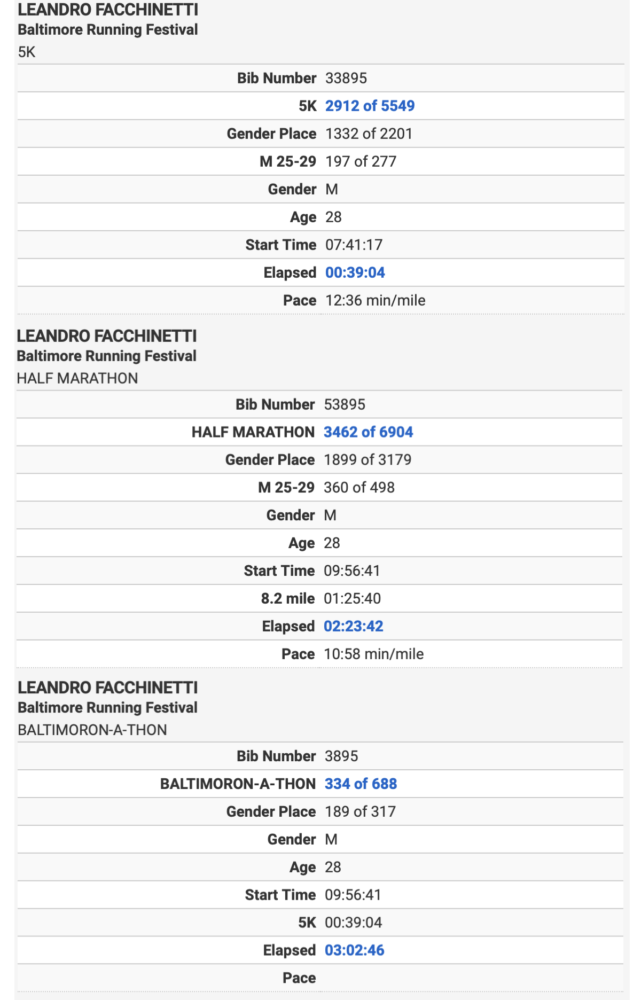

I’m a PhD candidate in Computer Science, at The Programming Languages Laboratory, at the Johns Hopkins University, advised by Dr. Scott Smith.
I’m interested in writing & reading, music & video production, running, mindfulness, minimalism, and veganism.
I live in Baltimore, Maryland, United States.
News
2020-05-03: Yet again, switched the engine that produces this website. This time, from Gatsby to a custom script. The custom script is simpler, easier to maintain, and includes only the features that are needed. No more GraphQL & friends, which may be great for some use cases but are overkill for such a simple website. Instead, added new features, for example, syntax highlighting of code that appears inline and in SVGs.
2020-03-21: Published a completely reworked version of Kill the Newsletter! It was rewritten from Ruby & Sinatra to TypeScript & Express. Over the years Kill the Newsletter! has been written and rewritten in several technology stacks, and this is the best version yet. Along the way, several bugs were fixed and improvements made.
2020-03-16: Published LaTeX Dissertation Template for the Johns Hopkins University, a LaTeX template that conforms to the Formatting Requirements of the Johns Hopkins University Library.
2020-03-10: Published Shiki LaTeX, a JavaScript & TypeScript package with a Shiki renderer for LaTeX. Compatible with minted, replacing Pygments.
2020-03-04: Published Collections Deep Equal, a JavaScript & TypeScript package with collections like JavaScript’s native Maps and Sets, but using value equality (util.isDeepStrictEqual()) instead of reference equality.
2020-03-02: Updated Curriculum Vitae and Understanding the Type of call/cc.
2020-02-27: Switched the engine that produces this website from Jekyll to Gatsby. Gatsby is (marginally) more popular, its community seems to be more active, its plugins produce better results (at the cost of more configuration and a steeper learning curve), and it’s in JavaScript instead of Ruby.
2020-01-25: Recorded properly Now I’m Taking OOSE, a song from a lecture in Object-Oriented Software Engineering.
2019-12-23: Finished teaching Object-Oriented Software Engineering at the Johns Hopkins University. See course reviews.
2019-10-19: Ran on the Baltimore Running Festival: a 5K followed by a half-marathon, in the so-called Baltimoron-a-thon. Succeeded in two personal goals: to run the entire course without stopping or walking, and to finish the half-marathon in less than 3 hours 🎉
Times

2019-09: Started teaching Object-Oriented Software Engineering at the Johns Hopkins University.
2019-07: The paper Higher-order Demand-driven Program Analysis was published on the ACM Transactions on Programming Languages and Systems (TOPLAS).
2019-06: Made public Yocto-CFA, a work-in-progress dissertation.
Videos
Using Keynote to Draw Figures for LaTeX Documents
Articles
Understanding the Type of call/cc
Songs
Contact
me@leafac.com · leandro@jhu.edu